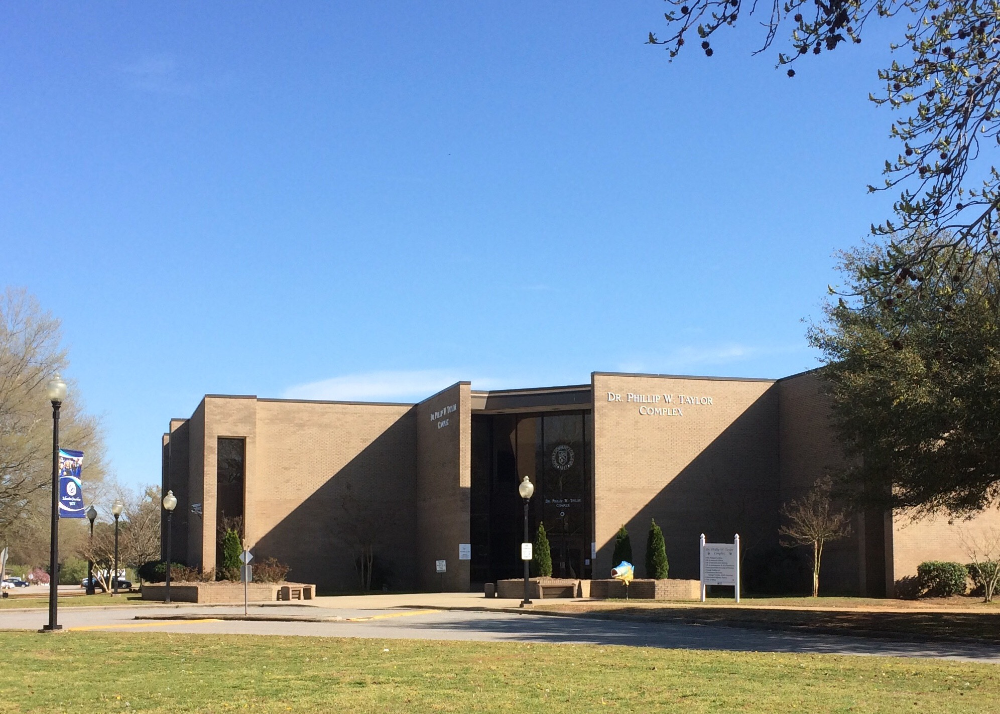

Dedication Page
Website and database design for Shop-Local-RR were graciously donated by students of the Information Technology Program at Halifax Community College in Weldon, NC. Students at HCC are encouraged to use the skills they learn to give back to local organizations, and faculty and administration work to develop programs and courses that foster relationships between students and local businesses.
Shop-Local-RR.com would like to personally thank Garry, Giovanni, Ingrid, and Mary for their time and efforts to take this project from an abstract notion of how to better our community to a functional resource for consumers, businesses, and organizations to connect and boost our local economy.
Throughout the design and implementation of this website, these students demonstrated innovation, professionalism, and dedication that you don't always find in college graduates. Halifax Community College is promoting rigor that rivals our four-year universities. When you decide to shop local, that means for education as well. Halifax Community College is conveniently local, is affordable, and offers a wide variety of vocational certificate programs and two-year degrees that will transfer to North Carolina universities. Moreover, rather than spending your education funds to pay salaries in a distant city, tuition spent at Halifax Community College supports a variety of staff and faculty who live and spend here in our county.